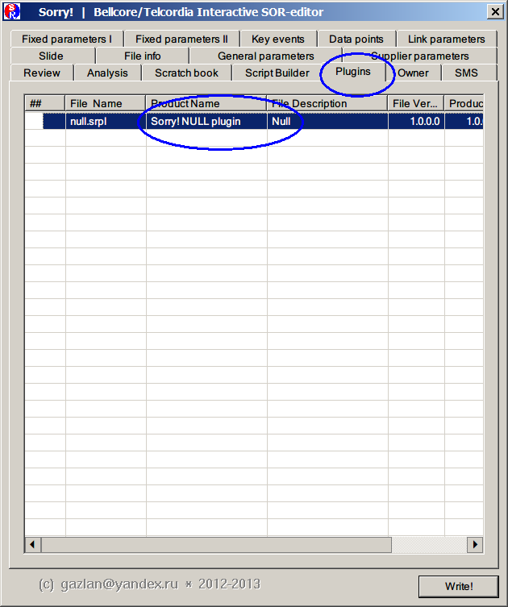
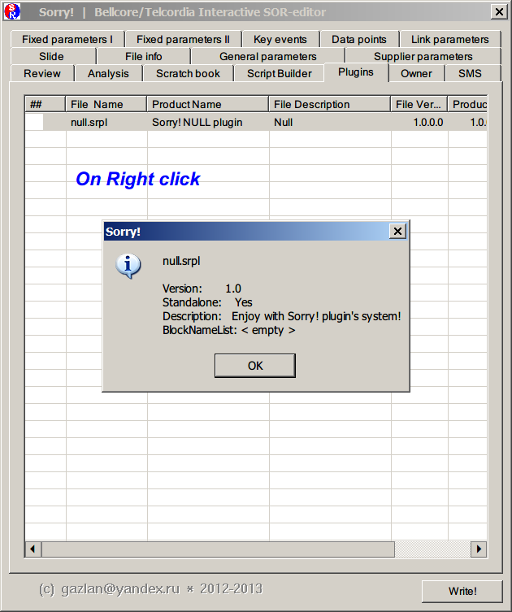
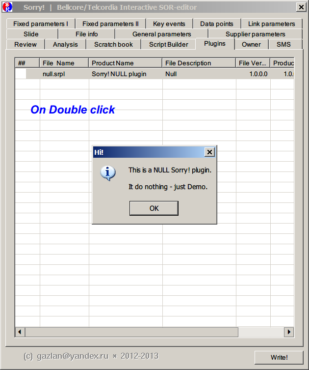

|
В Sorry! добавлена (начальная) поддержка плагинов.
Плагин представляет из себя обычную Windows DLL, переименованную к расширению .srpl и написанную на любом языке программирования, поддерживающим создание DLL.
Все плагины должны размещаться в поддиректории \plugins от корневого каталога Sorry!
Просмотр и вызов плагинов осуществляется на вкладке Plugins

Просмотр свойств выбранного плагина по правому клику

запуск на исполнение - двойным кликом

Плагин обязан экспортировать 4 функции (См. sorry_sdk.h) со следующими сигнатурами:
extern "C" __declspec(dllexport) BOOL SRPL_Initialize(); extern "C" __declspec(dllexport) void SRPL_Terminate(); extern "C" __declspec(dllexport) BOOL SRPL_Run(); extern "C" __declspec(dllexport) void* SRPL_Info();
Функции SRPL_Initialize() и SRPL_Terminate() могут быть пустыми (в этом случае, SRPL_Initialize просто возвращает TRUE), функция SRPL_Run() должна содержать необходимый функционал (выполнять реальную работу), функция SRPL_Info должна возвращать адрес заполненной структуры SRPL_INFO с информацией о плагине (См. sorry_sdk.h).
Sorry! API пока представлен всего несколькими функциями (SOR_WalkerSet и SOR_WalkerRun еще не имплементированы).
Если вы разрабатываете собственный плагин и вам нужна какая-либо функциональность (из предоставляемой Sorry!), напишите мне, и она будет добавлена в SDK в приоритетном порядке.
|